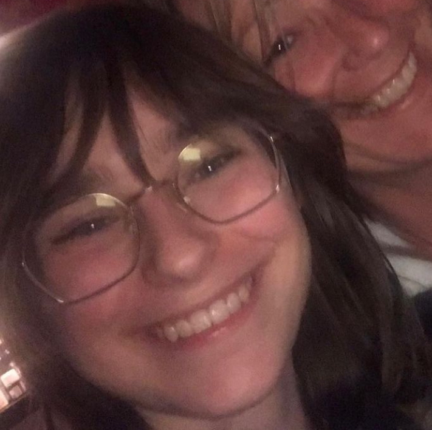

Mijn naam is Djeli, ik ben zeer zelfstandig en kan goed in teamverband werken. Ik woon in het
Westland; Monster. Ik heb voor deze opleiding gekozen omdat coderen mij erg interessant leek en ik
mezelf dit wel als een baan zag doen. Momenteel werk ik bij de hoogvliet ook in Monster als
schappenvuller, maar ik denk erover om daar kassawerk te gaan doen. Mijn goede eigenschappen zijn
dat ik een harde werker ben en het niet erg vind om meer te werken als het echt nodig is.

In mijn vrije tijd doe ik vooral aan muziek luisteren, lezen, skateboarden en tegen vrienden praten
of met hun afspreken. Mijn vrienden zijn een heel groot stuk van mijn leven en heel belangrijk voor
me. Ook is mijn kat Jacky heel belangrijk voor me, hij is mischien wel een oude man maar hij blijft
schattig.